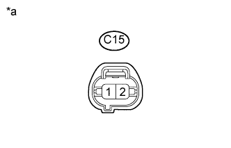

DTC P0443 Цепь клапана управления продувкой системы улавливания паров топлива |
| № DTC | Условие обнаружения DTC | Неисправный участок |
| P0443 | Напряжение на контактах выходной цепи ECM не соответствует управляющим сигналам от ECM к электровакуумному клапану продувки (логика диагностирования за 1 поездку). |
|
| 1.ВЫПОЛНИТЕ ДИАГНОСТИКУ В РЕЖИМЕ ACTIVE TEST С ПОМОЩЬЮ ПОРТАТИВНОГО ДИАГНОСТИЧЕСКОГО ПРИБОРА (ACTIVATE THE VSV FOR EVAP CONTROL) |
Подсоедините портативный диагностический прибор к DLC3.
Отсоедините вакуумный шланг электровакуумного клапана продувки от угольного адсорбера.
Запустите двигатель и включите портативный диагностический прибор.
Войдите в следующие меню: Powertrain / Engine and ECT / Active Test / Activate the VSV for Evap Control.
Если для управления электровакуумным клапаном продувки используется портативный диагностический прибор, проверьте пальцем всасывание в отсоединенном шланге.
| Режим работы прибора | Заданные условия |
| Электровакуумный клапан включен | Присасывание пальца к отсоединенному шлангу |
| Электровакуумный клапан выключен | Отсутствие всасывающего действия на палец в отсоединенном шланге |
| *1 | Электровакуумный клапан продувки |
| *2 | Шланг (к адсорберу) |
|
| ||||
| OK | ||
| ||
| 2.ПРОВЕРЬТЕ ЭЛЕКТРОВАКУУМНЫЙ КЛАПАН ПРОДУВКИ |
Проверьте электровакуумный клапан продувки (Нажмите здесь).
|
| ||||
| OK | |
| 3.ПРОВЕРЬТЕ ЭЛЕКТРОВАКУУМНЫЙ КЛАПАН ПРОДУВКИ (НАПРЯЖЕНИЕ ПИТАНИЯ) |
|  |
Отсоедините разъем электровакуумного клапана продувки (VSV).
Измерьте напряжение в соответствии со значениями, приведенными в таблице.
| Контакты для подключения диагностического прибора | Условие | Заданные условия |
| C15-1 - масса | Зажигание включено (IG) | 11 - 14 В |
| *a | Вид спереди разъема со стороны жгута проводов: (к электровакуумному клапану продувки) |
Подсоедините разъем электровакуумного клапана продувки.
|
| ||||
| OK | |
| 4.ПРОВЕРЬТЕ ЖГУТ ПРОВОДОВ И РАЗЪЕМ (ЭЛЕКТРОВАКУУМНЫЙ КЛАПАН ПРОДУВКИ - ECM) |
Отсоедините разъем электровакуумного клапана продувки (VSV).
Отсоедините разъем ЭБУ.
Измерьте сопротивление между указанными контактами разъемов со стороны жгутов проводов.
| Контакты для подключения диагностического прибора | Условие | Заданные условия |
| C15-2 - C36-18 (PRG) | Всегда | Менее 1 Ом |
| Контакты для подключения диагностического прибора | Условие | Заданные условия |
| C15-2 или C36-18 (PRG) - масса | Всегда | 10 кОм или более |
Подсоедините разъем электровакуумного клапана продувки.
Подсоедините разъем ECM.
|
| ||||
| OK | ||
| ||
| 5.ПРОВЕРЬТЕ ЖГУТ ПРОВОДОВ И РАЗЪЕМ (ЭЛЕКТРОВАКУУМНЫЙ КЛАПАН ПРОДУВКИ - ИНТЕГРИРОВАННОЕ РЕЛЕ № 1) |
Отсоедините разъем электровакуумного клапана продувки (VSV).
Извлеките интегрированное реле № 1 из блока реле моторного отсека.
Измерьте сопротивление в соответствии со значениями, приведенными в таблице ниже.
| Контакты для подключения диагностического прибора | Режим | Заданные условия |
| C15-1 - 1B-4 | Всегда | Менее 1 Ом |
| Контакты для подключения диагностического прибора | Режим | Заданные условия |
| C15-1 или 1B-4 - масса | Всегда | 10 кОм или более |
Подсоедините разъем электровакуумного клапана продувки.
Установите интегрированное реле № 1.
|
| ||||
| OK | ||
| ||